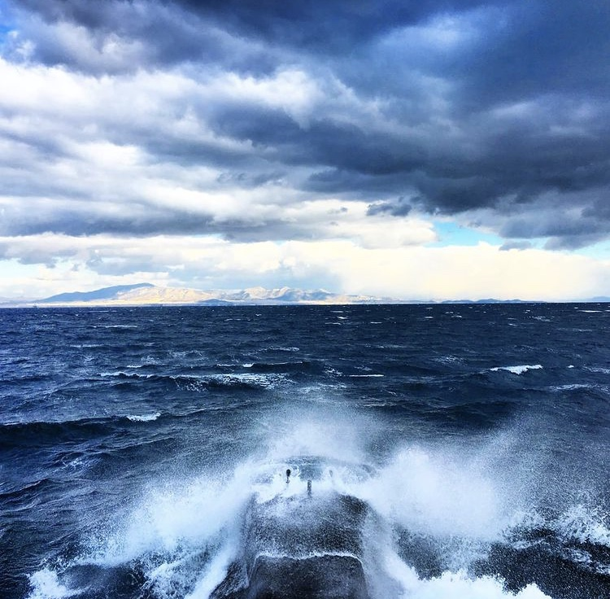
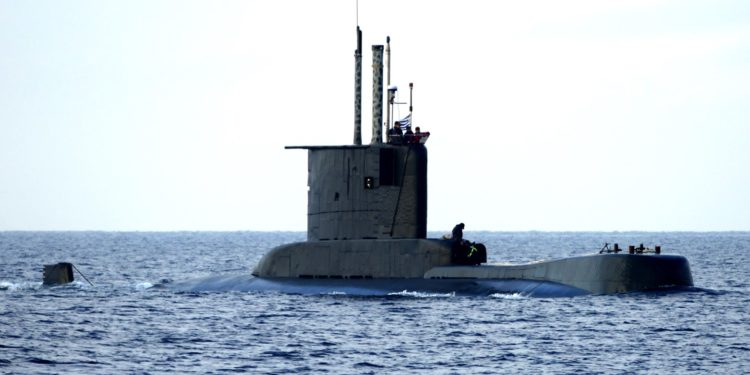
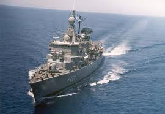

Naval Officer on Greek Frigates (2011–2014)
- Positions Held:
- Administrative Manager
- Assistant Operations Officer
- Assistant Navigation Officer
- Assistant Electronic Support Officer
- Communications Officer
- Anti-Submarine Systems Officer

Submarine School Graduate (2013–2014)
- Acquired comprehensive knowledge of all mechanical and electronic systems of submarines.


Naval Officer on Submarines (2014–2021)
- Positions Held:
- 2014–2015:
- Administrative Manager
- Navigation Manager
- Assistant Operations Officer
- 2015–2021:
- Operations Manager
- Navigation Manager
- Weapons Manager
- Acted as the point of contact between NATO and Greek submarines, managing water space and other NATO-related issues.
- 2014–2015:


Operations Manager on Frigate (2021–2022)
- Positions Held:
- Operations Manager
- Judicial Affairs Officer

Executive Officer on Gunboat (2022–2023)
- Positions Held:
- Executive Officer
- Human Resources Officer
- Logistics Officer
Electronic Support Officer on Frigate (2023–2024)
- Focused on managing and supporting electronic systems.